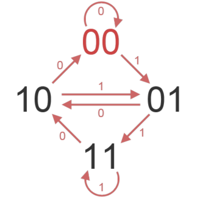
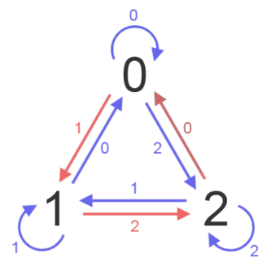
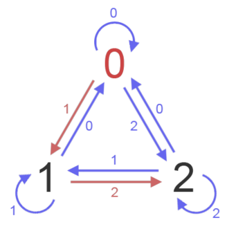

Conceptos Básicos
-
Símbolo
Test
-
Alfabeto
Test
-
Secuencia
Test
Normalidad
Una secuencia s es normal si, para cada n, todos los bloques de tamaño n aparecen con igual frecuencia en s.
Por ejemplo, s es normal en base 2 si:
-
0 y 1
aparecen con frecuencia
1/2 cada uno
-
00, 01, 10, 11
aparecen con frecuencia
1/4 cada uno
-
000, 001, 010, 011,
100, 101, 110, 111
aparecen con frecuencia
1/8 cada uno
- Y así sucesivamente...
Normalidad – Ejemplos
Ejemplo 1
s = 0101010101010101010101010101010101010101010101...
- 0 y 1 aparecen con probabilidad 1/2.
- Pero 00 y 11 nunca aparecen.
- Entonces
s no es normal
Normalidad – Ejemplos
Ejemplo 2
s = 0123456789101112131415161718192021222324252627...
- La concatenación de todos los números naturales es normal.
- Esta secuencia se conoce como la secuencia de Champernowne.
Discrepancia de Normalidad
La discrepancia de normalidad de una secuencia s para la posición n y tamaño de bloque l es la máxima diferencia entre la frecuencia real y la frecuencia esperada de los bloques de tamaño l en los primeros n símbolos de s.
Por ejemplo
Si s = 0120010..., n = 7 y l = 1:
- El 0 aparece 4 veces en 012002:
|4/7 - 1/3| = 0.2381...
- El 1 aparece 2 veces en 012002:
|2/7 - 1/3| = 0.0476...
- El 2 aparece 1 vez en 012002:
|1/7 - 1/3| = 0.1905...
- La discrepancia es
0.2381... a causa del 0 que aparece demasiadas veces.
Secuencias de Bruijn
Una secuencia de Bruijn de orden n es una secuencia donde todos los bloques de tamaño n aparecen exáctamente 1 vez.
Ejemplo
Una secuencia de Bruijn de orden 2 en base 3
0120022110
0120022110
0120022110
0120022110
0120022110
0120022110
0120022110
0120022110
0120022110
0120022110
Grafo de Bruijn
Un grafo de Bruijn de orden n es el grafo dirigido cuyos nodos son los bloques de n dígitos y dos nodos están conectados si los últimos n-1 dígitos del primer nodo coinciden con los primeros dígitos del segundo.

Grafo de Bruijn de orden 2 para base 2
Grafo de Bruijn – Teoremas
Un camino Hamiltoniano (pasa por todos los nodos) en un Grafo de Bruijn de orden n representa una secuencia de Bruijn de orden n.

Resultado: 00110
Grafo de Bruijn – Teoremas
Un ciclo Euleriano (ciclo que pasa por todos los ejes) en un Grafo de Bruijn de orden n representa una secuencia de Bruijn de orden n+1.

Resultado: 0011101000
Secuencias de Bruijn Infinitas
En un alfabeto de al menos 3 dígitos, un camino Hamiltoniano en un grafo de Bruijn se puede extender a un ciclo Euleriano.

Resultado: 01200221

Resultado: 012002211

Resultado: 0120022110
Resultado: 01200221100010111210202122201
Secuencias de Bruijn Infinitas
Para alfabetos de 2 dígitos no podemos extender una secuencia de Bruijn de orden n a una de orden n+1, pero sí a una de n+2.
Ejemplos
- 0110010100001111011...
- 010001110100101011001101111100000100...